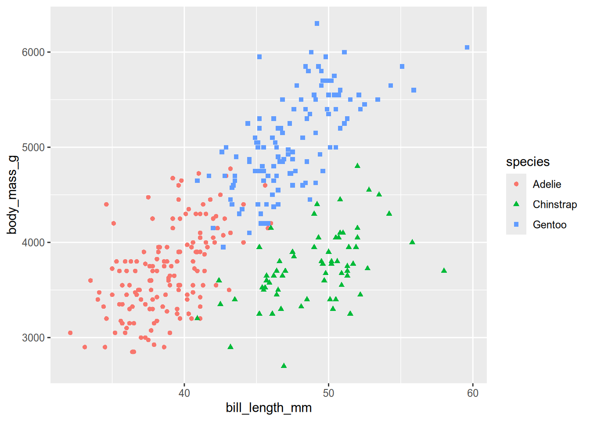
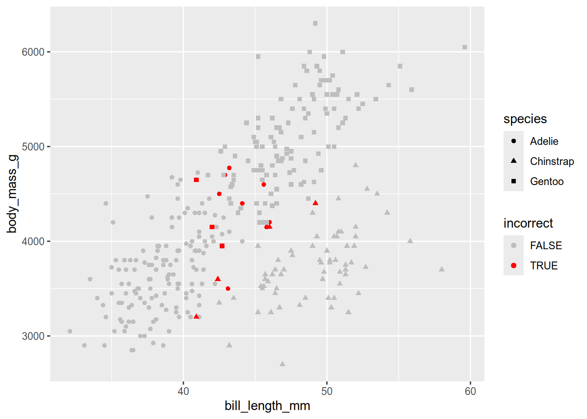
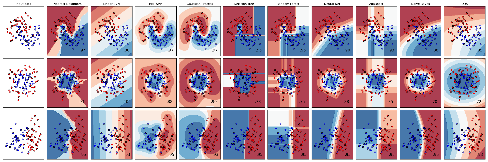
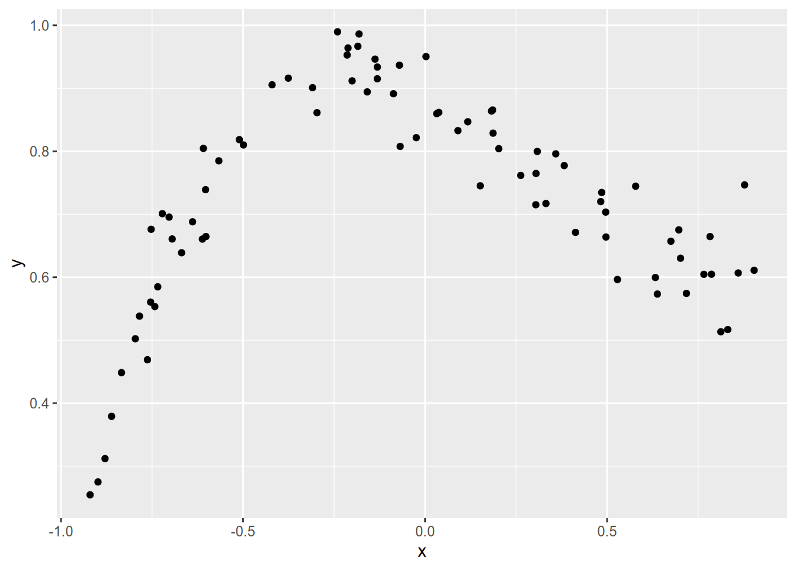
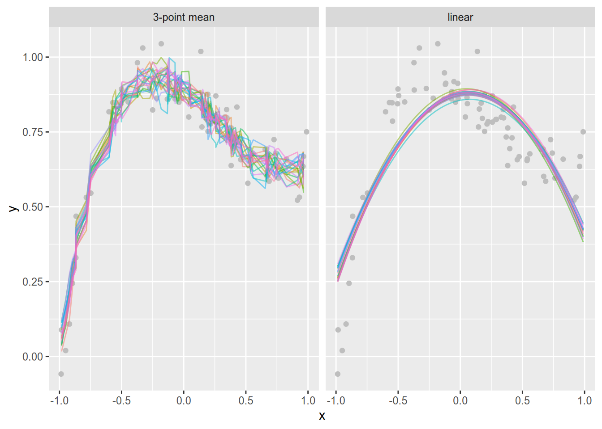
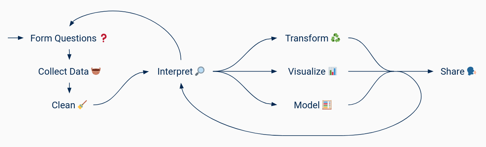
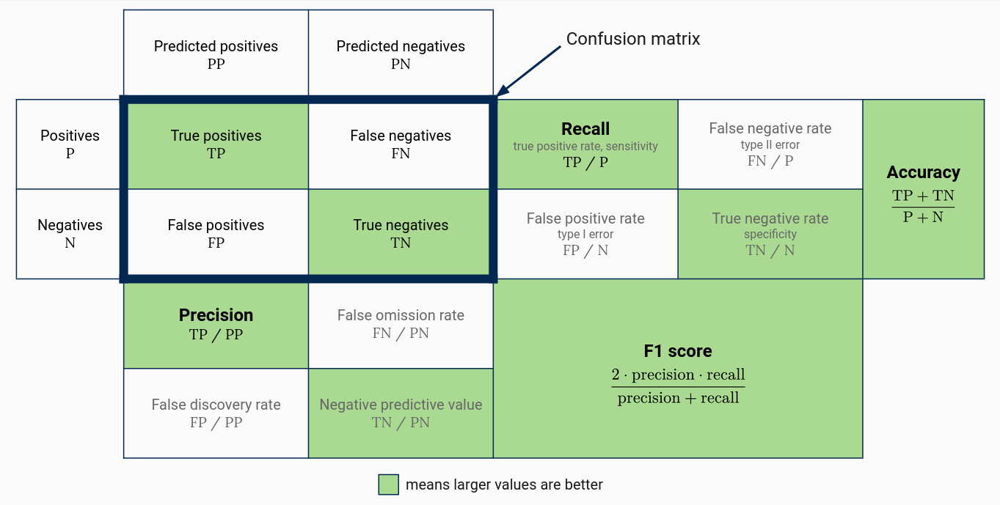
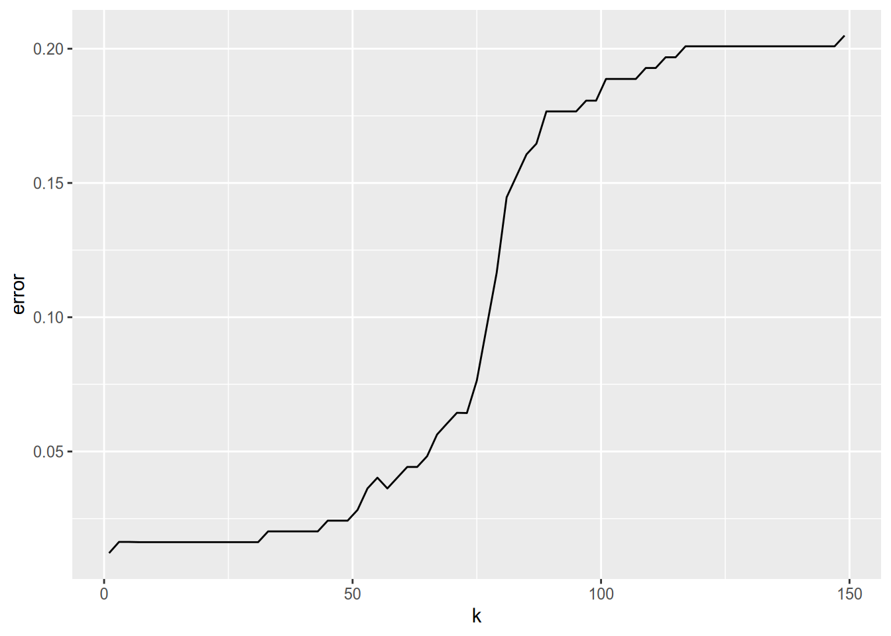

install.packages("palmerpenguins")
install.packages("ggplot2")
install.packages("tidymodels")1 Supervised Learning
1.1 Introduction
Supervised learning methods learn from training data in order to make predictions about new data.
Before going further, let’s review some necessary vocabulary:
- A unit is an entity of interest in a data set. Units are sometimes also called subjects.
- An observation is all measurements for a single unit. Observations are sometimes also called cases.
- A feature is a single measurement across all units. Features are sometimes also called variables, covariates, or predictors.
- A response is a feature that you want to predict.
- The dimensionality of a data set is the number of features.
For example, suppose you’ve collected a data set with the age, height, and species of every tree in your neighborhood. Each tree is a unit. Each (age, height, species) measurement for a tree is an observation. The features are age, height, and species. If you want to use supervised learning to predict height based on age and species, then height is a response. 🌲🌳🌴
Problems and methods are conventionally described in terms of the type of response:
- Regression refers to a numerical response.
- Classification refers to a categorical response. We call the categories classes.
Continuing the trees example, if you want to predict height in meters, you have a regression problem. If you want to predict species, you have a classification problem.
This chapter focuses on classification, but many of the concepts covered here are equally relevant to regression. Moreover, there are regression variants of many classification methods. In fact, many classifiers are just a combination of a regression method that predicts class probabilities and a decision rule that selects a class based on the prediction.
Note
If you want to learn more about regression, see DataLab’s Introduction to Regression Modeling in R workshop series.
Caution
Classification methods are reductive: they assume that classes are mutually exclusive and only predict one class for each data point.
In contexts where predictions are meant to inform people making decisions, regression methods are often more appropriate and yield more informative predictions (for example, class probabilities). Frank Harrell (Professor of Biostatistics, Vanderbilt University) discusses this in his post Classification vs. Prediction.
On the other hand, classification methods often work well for automating decisions or tasks that are straightforward but tedious, especially if the stakes are low.
A supervised learning method consists of:
- A model for making predictions, with assumptions and adjustable parameters that govern what predictions are made.
- A loss function for measuring the real or abstract cost of incorrect predictions.
Methods “learn” by selecting parameter values that minimize loss for predictions about training data, in the hope that these values will generalize well to new data.
Most models also have hyperparameters (or tuning parameters), parameters that are not learned and must instead be specified before training. Usually, these control how much the model adapts to the training data. To select hyperparameter values, use your own knowledge about the data as well as model evaluation techniques (see Section 1.5).
The next section presents an overview of packages for supervised learning in R, some of which are demonstrated in later examples. Subsequent sections explain how to select features, how to select a model, and common model evaluation strategies, including data partitioning and cross-validation. The chapter ends with a short discussion of how to improve model performance and where to go to learn more.
1.2 Packages
The R community has developed dozens of machine learning packages to supplement R’s small selection of built-in functions. A majority of these provide a single method or family of methods (such as decision trees).
The CRAN Task View: Machine Learning page is a good starting point for finding packages related to supervised learning. The task view is regularly updated by the CRAN administrators and only lists popular, actively-maintained packages.
Tip
If the task view doesn’t list a package for a method you want to use, try searching the web. Many packages hosted on CRAN or GitHub are not listed in the task view because they’re obscure, unmaintained, or in early development. None of these things mean a package won’t work, although you might want to check the package code carefully to make sure it does what you expect.
Different packages generally provide different programming interfaces. This makes studying machine learning in R difficult: in addition to learning each method, you must also learn the idiosyncrasies of each package. This also makes it difficult to compare methods by swapping them in and out of a data processing pipeline. To address this, some community members have developed packages that provide a common programming interface on top of existing, independent methods packages. Others have developed omnibus packages that implement a wide variety of methods. These packages are listed below from most to least CRAN downloads in March 2024.
- caret is a common interface for training models with existing packages, as well as a collection of functions for related tasks (such as splitting data).
- tidymodels is a metapackage (a collection of packages) for supervised learning designed to work well with tidyverse packages. In some respects, this is the successor to caret. Especially important are the packages:
- parsnip provides a common interface for existing methods packages, or “engines” in the terminology of parsnip. For some methods, multiple engines are available, while for others, there is only one.
- rsample provides functions to partition and sample data sets.
- yardstick provides functions to compute a variety of performance statistics.
- broom provides functions to summarize model results in data frames.
- h2o is an omnibus machine learning package, with implementations of many popular supervised and unsupervised learning methods. h2o is available for many different programming languages and places emphasis on computational efficiency.
- mlr3 and mlr3learners provide a common, object-oriented interface for existing methods packages.
- SuperLearner is an omnibus machine learning package designed to evaluate multiple methods and select the best combination of them.
- qeML is a relatively new package that provides a common interface for existing methods, intended to be easier to use than tidymodels and mlr3. qeML is developed by UC Davis Professor Emeritus Norm Matloff.
The caret, tidymodels, and h2o packages are all relatively complete solutions with detailed documentation, many users, and many contributors.
1.2.1 Example: Classifying Penguins

In this example, we’ll fit a \(k\)-nearest neighbors (kNN) classifier with the tidymodels package. In \(k\)-nearest neighbors, new observations are classified by taking a majority vote of the classes of the \(k\) nearest training set observations. Generally, we choose odd \(k\) to prevent ties, although there are schemes for breaking ties if \(k\) is even.
As an example data set, we’ll use the Palmer Penguins data set, which was collected by Dr. Kristen Gorman at Palmer Station, Antarctica. The data set records physical characteristics for hundreds of individual penguins from three different species: Adélie, Chinstrap, and Gentoo.
The data set is available for R in the palmerpenguins package. We’ll also use several other packages in this example. To install them all:
Load the palmerpenguins package, which will automatically create a penguins variable, and take a look at the first few observations:
library("palmerpenguins")
head(penguins)# A tibble: 6 × 8
species island bill_length_mm bill_depth_mm flipper_length_mm body_mass_g
<fct> <fct> <dbl> <dbl> <int> <int>
1 Adelie Torgersen 39.1 18.7 181 3750
2 Adelie Torgersen 39.5 17.4 186 3800
3 Adelie Torgersen 40.3 18 195 3250
4 Adelie Torgersen NA NA NA NA
5 Adelie Torgersen 36.7 19.3 193 3450
6 Adelie Torgersen 39.3 20.6 190 3650
# ℹ 2 more variables: sex <fct>, year <int>It’s a good idea to do some exploratory analysis before fitting a model. We can use ggplot2 to plot bill length, body mass, and species for each penguin:
library("ggplot2")
plt = ggplot(penguins) + geom_point() + aes(shape = species, color = species)
plt %+% aes(x = bill_length_mm, y = body_mass_g)Warning: Removed 2 rows containing missing values or values outside the scale range
(`geom_point()`).
# Other plots that might be of interest:
# plt %+% aes(x = bill_length_mm, y = bill_depth_mm)
# plt %+% aes(x = bill_length_mm, y = flipper_length_mm)
# plt %+% aes(x = bill_depth_mm, y = body_mass_g)
# plt %+% aes(x = bill_depth_mm, y = flipper_length_mm)
# plt %+% aes(x = flipper_length_mm, y = body_mass_g)The plot shows that the three species of penguins are relatively well-separated by bill length and body mass. Adélie penguins have relatively short bills and light bodies, Chinstrap penguins have relatively long bills and light bodies, and Gentoo penguins have relatively long bills and heavy bodies. The species only overlap for a few penguins. This separation is a sign that a classifier is likely to work well.
Tip
Classification is more difficult when the classes are not well-separated by the features, but not necessarily intractible. Sometimes it’s possible to transform features to provide better separation. Some models can also take advantage of interactions between features that are not readily apparent in scatter plots.
Initial exploratory analysis is also when you should check data for outliers and missing values. The previous plot didn’t show any signs of extreme outliers. Now let’s check for missing values:
summary(penguins) species island bill_length_mm bill_depth_mm
Adelie :152 Biscoe :168 Min. :32.10 Min. :13.10
Chinstrap: 68 Dream :124 1st Qu.:39.23 1st Qu.:15.60
Gentoo :124 Torgersen: 52 Median :44.45 Median :17.30
Mean :43.92 Mean :17.15
3rd Qu.:48.50 3rd Qu.:18.70
Max. :59.60 Max. :21.50
NA's :2 NA's :2
flipper_length_mm body_mass_g sex year
Min. :172.0 Min. :2700 female:165 Min. :2007
1st Qu.:190.0 1st Qu.:3550 male :168 1st Qu.:2007
Median :197.0 Median :4050 NA's : 11 Median :2008
Mean :200.9 Mean :4202 Mean :2008
3rd Qu.:213.0 3rd Qu.:4750 3rd Qu.:2009
Max. :231.0 Max. :6300 Max. :2009
NA's :2 NA's :2 kNN classifiers can’t handle missing values, and only a few observation have them, so let’s remove these observations from the data set:
peng = na.omit(penguins)Now let’s train a kNN classifier with tidymodels. Specifically, we’ll use the parsnip package, which is included with tidymodels and provides a common interface for a wide variety of supervised learning models.
Training with parsnip follows the same two steps for every model:
library("parsnip")
1knn = nearest_neighbor("classification", neighbors = 10)
2fitted = fit(knn, species ~ bill_length_mm + body_mass_g, peng)- 1
-
Initialize a model and set hyperparameters by calling a model function. In this case, we use
nearest_neighborsince we want a kNN model, and set the number of neighbors to 10. - 2
-
Train the model by calling
fitwith the model, a formula~that specifies the response on the left-hand side and the predictors on the right-hand side, and the data.
You can print the fitted model to get more information:
fittedparsnip model object
Call:
kknn::train.kknn(formula = species ~ bill_length_mm + body_mass_g, data = data, ks = min_rows(10, data, 5))
Type of response variable: nominal
Minimal misclassification: 0.06006006
Best kernel: optimal
Best k: 10This shows the type of response, an error rate estimate on the training set, kernel ( distance-weighting function used in the class vote), and choice of \(k\) (misleadingly listed as “Best k”). The kernel is actually another hyperparameter for this model, but parsnip selects a reasonable kernel by default. You can find the hyperparameters and their default values for a model on the model function’s help page. In this case, that’s ?nearest_neighbor.
Once you’ve trained a model, you can use it with the predict function to make predictions. The predict function takes the fitted model and a data set with the same columns (excluding the response) as the training set as arguments. The function returns the predictions in a 1-column data frame.
To try out predict, let’s calculate the error on the training set manually. First, predict the class for each observation in the training set:
preds = predict(fitted, peng)
preds# A tibble: 333 × 1
.pred_class
<fct>
1 Adelie
2 Adelie
3 Adelie
4 Adelie
5 Adelie
6 Adelie
7 Adelie
8 Adelie
9 Adelie
10 Adelie
# ℹ 323 more rowsNotice that predict returns a data frame with a single column named .pred_class. The return value is always a data frame with a .pred_class column, regardless of the model used.
Now compute the proportion of incorrect predictions:
sum(peng$species != preds$.pred_class) / nrow(peng)[1] 0.04504505Since the model was trained on these penguins, this error rate likely underestimates the error rate for new penguins. Moreover, this is an overall error rate and doesn’t tell us much about error rates for the individual species.
We can get a slightly better idea of the model’s behavior by plotting the data again, marking the misclassified penguins:
incorrect = peng$species != preds$.pred_class
ggplot(peng) + geom_point() +
aes(x = bill_length_mm, y = body_mass_g, shape = species,
color = incorrect) +
scale_color_manual(values = c("gray", "red"))
The plot shows that most of the misclassified penguins are in regions where one group overlaps with another. We’ll revisit this data set and model in subsequet examples, to learn about better evaluation methods and about strategies for improving the fit.
1.3 Selecting a Model

The No Free Lunch Theorem states that there is no single “best” supervised learning model. Different models make different assumptions, and will work better for data that satisfy those assumptions. Generally, you should select a model by comparing several different models and using whatever knowledge you have about the data.
Caution
The wide variety of models people have invented can be distracting. For improving predictive performance, it’s almost always more effective to collect more data or to select or engineer better features than it is to switch models.
In spite of the No Free Lunch Theorem, some models are more general than others, and make good starting points. Here’s a list of some well-known classification models, where ✨ indicates a good starting point model:
- ✨ Decision trees (classification tree guide, random forest guide)
- Pros: easy to interpret, can handle missing data, selects features automatically
- Cons: prone to overfitting, sensitive to class imbalance, training is computationally expensive
- Takeaway: random forests and boosted trees, which address overfitting at the cost of interpretability, perform well on a wide variety of problems
- ✨ Generalized linear models (GLM) (logistic regression guide)
- Pros: easy to interpret, training is computationally cheap, well-understood statistical properties, robust on small data sets
- Cons: moderate assumptions (linearity)
- Takeaway: GLMs have a long history but remain effective, especially for smaller data sets
- ✨ \(k\)-nearest neighbors (kNN)
- Pros: conceptually simple
- Cons: prediction is computationally expensive, poor performance at high number of features
- Takeaway: appropriate for small to medium data sets
- Naive Bayes
- Pros: conceptually simple, scales well
- Cons: strong assumptions (independence), only for classification
- Takeaway: useful for very large data sets
- Support vector machines (SVM)
- Pros: okay with high number of features
- Cons: hard to interpret, conceptually complex, binary by default
- Takeaway: SVMs have become less popular than tree models in recent years, but can still be effective for many problems
- Discriminant analysis (DA)
- Pros: well-understood statistical properties
- Cons: strong assumptions (normality), only for classification
- Takeaway: there are better models
Tip
For another perspective on selecting a model, see the scikit-learn algorithm cheat sheet.
Although scikit-learn is a Python package, its user guide is also an excellent, concise reference for machine learning concepts (without any code).
For most models, there’s a tradeoff between simplicity (in the sense of fewer parameters) and flexibility.
Simple models make strong assumptions about the data, so there are fewer parameters to estimate. If the assumptions are satisfied, simple models perform well even when the number of observations is low or the observations are relatively noisy. However, if the assumptions aren’t satisfied, simple models tend to underfit, meaning they fail to learn the signal in the training data. Error in an underfit model is mostly bias caused by the assumptions.
Important
Bias is a specific statistical term which doesn’t carry the same connotation of unfairness as the common English meaning. Instead, it means that on average, a model’s predicted values differ from the actual values.
Whether or not statistical bias makes a model unfair depends on the context in which the model will be used. For contexts where it doesn’t, there are often good reasons to accept some bias.
Flexible models make only weak assumptions about the data. If the number of observations is high and the observations are not too noisy, flexible models typically perform well. However, if the number of observations is low or the observations are very noisy, flexible models tend to overfit, learning the noise in the training data instead of the signal. As a result, the model will not generalize well to new observations. Error in an overfit model is mostly due to variance, meaning the model is too sensitive to small changes in the training set.
Simple versus flexible is spectrum, and models usually provide hyperparameters to control how simple or flexible the model is. One example is \(k\) in \(k\)-nearest neighbors. For \(k\) close to the number of observations, the model is simple and biased in favor of the majority class. For \(k\) close to 1, the model is flexible: it uses only a few observations in the training set to make each prediction, and thus is susceptible to noisy or anomalous observations.
The tradeoff between simple and flexible models is more commonly known as the bias-variance tradeoff. You can learn more about the bias-variance tradeoff from this interactive demo.
1.3.1 Example: Bias-Variance Tradeoff
Simulations are a great way to answer questions about or demonstrate properties of machine learning models. Let’s use a simulation to demonstrate the bias-variance tradeoff.
First, let’s generate some data along this curve:
\[ y = x^3 - 10 e^{-0.5 (x - 3)^2} + 1 \]
Any non-polynomial curve will do, but we’ll use this one because it plots nicely. To generate points for \(x\) in \([-1, 1]\) run:
n = 80
x = runif(n, -1, 1)
y = x^3 - 10 * exp(-0.5 * (x - 3)^2) + 1Now let’s make several copies of these points, with random noise added to the \(y\) coordinates, to simulate collecting multiple samples with measurement error. To simulate 20 samples:
n_samples = 20
x = rep(x, n_samples)
noise = rnorm(n * n_samples, 0, 0.05)
y = rep(y, n_samples) + noise
# Store the points in a data frame with sample ID.
sample_id = rep(seq(n_samples), each = n)
data = data.frame(x = x, y = y, sample_id = sample_id)Before we fit any models, let’s plot one of the samples to see what it looks like:
sample01 = subset(data, sample_id == 1)
ggplot(sample01) + aes(x = x, y = y) + geom_point()
Now let’s fit two models to each sample:
- Since the data look somewhat quadratic, we’ll fit a linear model with \(x\) and \(x^2\) as features. This will be our simple, high-bias model.
- We’ll also fit a model that’s just the mean of every 3 points. Although this model is conceptually simple, it will be our flexible, high-variance model.
We’ll use the following function to fit the models. Note that it uses the zoo package’s rollmean function to fit the 3-point mean model, where “fit” really just means computing the means. For the linear model, the function fits the model with lm and then computes points on the regression line for a grid of \(x\) coordinates.
# install.packages("zoo")
library("zoo")
Attaching package: 'zoo'The following objects are masked from 'package:base':
as.Date, as.Date.numericfit_models = function(samp) {
# Sort the points by x coordinate.
samp = samp[order(samp$x), ]
# Fit the linear model.
fitted_lm = lm(y ~ 1 + x + I(x^2), samp)
# Evaluate the linear model on a grid.
grid = seq(min(samp$x), max(samp$x), length.out = 1000)
lm_pts = data.frame(x = grid)
lm_pts$yhat = predict(fitted_lm, lm_pts)
lm_pts$model = "linear"
# Fit the 3-point mean model.
mean3_pts = data.frame(
# All x except first and last.
x = samp$x[-c(1, nrow(samp))],
yhat = rollmean(samp$y, 3),
model = "3-point mean"
)
# Combine into a single data frame.
fitted = rbind(lm_pts, mean3_pts)
fitted$sample_id = samp$sample_id[[1]]
fitted
}We can us the fit_models with split and lapply to fit the models to each sample, and then combine all of the predictions into a single data frame:
by_sample = split(data, data$sample_id)
fitted = lapply(by_sample, fit_models)
fitted = do.call(rbind, fitted)Finally, let’s plot the fitted models:
ggplot(fitted) +
# Plot the points from one sample as an example.
geom_point(aes(x = x, y = y), sample01, color = "gray") +
# Plot the fitted models.
geom_line(aes(x = x, y = yhat, group = sample_id, color = factor(sample_id)),
alpha = 0.5) +
facet_wrap(vars(model)) +
guides(color = "none")
The plot shows that the 3-sample mean model varies far more across samples than the linear model. In other words, the 3-sample mean model has high variance. The linear model is more stable, but doesn’t follow the training data as well—it has high bias.
Simulations like this one are an important tool in every machine learning practicioner’s toolkit. You can use them to get a rough idea of how a model or estimator will behave under specific conditions. This example is based on one from Feature Engineering and Selection: A Practical Approach for Predictive Models by M. Kuhn & K. Johnson.
1.3.2 Example: Four Penguin Models
Let’s revisit the Palmer penguins data from Section 1.2.1. This time, we’ll fit several different models, in order to examine how much accuracy differs between them.
In order to get reliable accuracy estimates, let’s randomly split the data into two parts: a training set and a test set. The training set will contain 75% of the observations and the test set will contain the remaining 25%. We’ll train the models on the training set, and estimate accuracy on the test set. This ensures that we won’t overestimate the accuracy.
Splitting data into a training set and test set is a common practice. The rsample package, which is included in tidymodels, provides an initial_split function to split a data set. The default split is 75-25. You can use the accompanying training and testing functions to get the training set and test set from the split object:
library("rsample")
# Set a seed to make the split reproducible.
set.seed(10332)
splitted = initial_split(peng)
peng_train = training(splitted)
peng_test = testing(splitted)Now let’s fit the models and compute error estimates. This time, we’ll use all four numeric features in the data set: bill length, bill depth, flipper length, and body mass. We’ll use the default hyperparameters for each model except \(k\)-nearest neighbors, where there is no default for \(k\). We’ll use \(k = 15\), since a rule of thumb for choosing \(k\) is to use \(\sqrt{n}\), where \(n\) is the number of observations in the training set. For the penguins data:
sqrt(nrow(peng_train))[1] 15.77973To fit the models, run:
models = list(
# k-nearest neighbors
knn = nearest_neighbor("classification", neighbors = 15),
# Classification tree
tree = decision_tree("classification"),
# Multinomial regression (a linear model)
multinomial = multinom_reg("classification"),
# Support vector machine
svm = svm_rbf("classification")
)
form =
species ~ bill_length_mm + bill_depth_mm + flipper_length_mm + body_mass_g
sapply(models, function(model) {
fitted = fit(model, form, peng_train)
predicted = predict(fitted, peng_test)$.pred_class
sum(peng_test$species == predicted) / nrow(peng_test)
}) knn tree multinomial svm
0.9880952 0.9285714 0.9761905 0.9761905 All of the models predict with accuracy above 92%, and three are within 1 of 97%. This example shows that for this data set, the choice of model has a relatively minor effect on accuracy. That’s the case for many data sets. Having enough observations and selecting or engineering relevant features is far more important.
1.4 Selecting Features

In practice, the choice of method has less impact on predictive performance than the features and number of observations in the training data. Different methods do make different assumptions, and it’s important to think through whether the assumptions are satisfied, but no method is a substitute for data.
Some models, such as random forest models, can automatically select the most relevant features for prediction in a data set. With generalized linear models, you can use regularization methods, such as LASSO or Elastic Net, which add a penalty to the model’s loss function to encourage zeroing coefficients for unimportant features. These techniques can be helpful for screening features even if you ultimately plan to use a different model. You can also use exploratory analysis to assess which features have predictive power, and should use any expert knowledge you have about the data or population from which it was sampled.
Transforming features to create new features, a process known as feature engineering, can also improve model performance. Unfortunately, it can be difficult to determine which features to engineer unless you have deep knowledge about the data and problem you’re modeling.
Tip
Feature Engineering and Selection: A Practical Approach for Predictive Models by M. Kuhn & K. Johnson is a clear and thorough reference.
1.5 Evaluating Models
Important
This section emphasizes ways to evaluate model performance, or how effectively a model makes predictions. Carefully thinking through the context, purpose, ethics, and fairness of a model is even more important, if less technical.
A few useful references for thinking about model context and purpose are:
- UC Berkeley’s Human Contexts & Ethics Toolkit
- DataLab’s Responsible Data Science reader
- The Turing Way’s Guide for Ethical Research
Researchers have invented many different ways to quantify fairness. Arvind Narayanan (Professor of Computer Science, Princeton University) presented a lecture that introduces 21 of these and also co-authored a textbook about fairness in machine learning.
Perhaps the most informative classification model performance statistic is a confusion matrix, a cross-tabulation of actual and predicted classes. Unlike an accuracy estimate, a confusion matrix shows how well the model performs for each class. You can also use the confusion matrix to compute a variety of other statistics:

Four widely-used statistics are:
- Precision, which is the proportion of predictions for a class that are correct. High precision for a given class indicates that a model is generally correct when it predicts the class, but might fail to recognize some members of the class.
- Recall or sensitivity, which is the proportion of a class’ members that are correctly predicted. High recall for a given class indicates the model correctly recognizes members of the class, but might also predict members of other classes are in the class.
- Specificity, which is recall for the second class in a two-class problem.
- The F1 score, which is the harmonic mean of precision and recall. As a harmonic mean, the F1 score is close to 0 when precision or recall are and close to 1 when both precision and recall are.
You learn more about precision, recall, and the F1 score from this interactive guide.
The figure shows the situation for a two-class problem. You can also compute all of these statistics on a per-class basis when there are more than two classes (treat all other classes as the negative class). Moreover, you can compute overall precision, recall, and F1 score by averaging the class statistics. This is known as macro-averaging.
Another widely-used measure of performance for classification models is the receiver operating characteristic (ROC) curve and accompanying area under the curve (AUC). These measures are natural for classifiers that predict the probabilty of each class and use the predicted probabilities with a threshold decision rule to select the predicted class, because they show the behavior of the model for different choices of threshold. For models that do not predict class probabilities, the ROC curve does not exist, although researchers have devised ways to generalize the ROC curve to some of these models. You can learn more about ROC curves and AUC from this interactive guide.
1.5.1 Partitioning Data
In Section 1.3.2, we split the Palmer penguins data set into two parts: a training set to use for training models and a testing set to use for testing models. Splitting data sets this way ensures that performance statistics computed on the testing set are accurate. If you compute performance statistics for a model with the same data set you used for training, the statisitics will have an optimistic bias. In other words, accuracy, precision, recall and other positive statistics will be overestimated, while error rate and other negative statistics will be underestimated.
It’s important that the testing set is not used to train models at any point in the modeling process. Even using the testing set to select models or hyperparameters can bias the testing set estimates.
Since performance statistics are also helpful for selecting models and hyperparameters, and the training set will produce biased estimates, it’s often useful to split off a small part of the training set as a validation set. The validation set should only be used for selecting models and hyperparameters, not for training or final performance statistics. You can learn more about training, validation, and testing sets from this interactive guide.
You might wonder whether it’s inefficient to split the data set into so many subsets, since models generally perform better when they are trained on larger data sets. You’d be right to wonder—using a fixed training set and validation set can create a pessimistic bias in the performance statistics computed on the validation set. It also makes the statistics sensitive to any outliers or anomalous observations that end up in the validation set.
\(k\)-fold cross validition is one way to address the problems with using a fixed training set and validation set. In a \(k\)-fold cross-validation scheme, the training set is split into \(k\) random, equal-size subsets called folds. Then the model is fitted \(k\) times, giving each fold a chance to be the validation set (the remaining folds are used as a training set). This produces \(k\) estimates of any performance statistics of interest, which can be averaged to get an overall estimate. Cross-validation uses more of the data to train the model, which makes the performance statistic estimates more accurate. By averaging the estimates over several folds, it also ensures that the overall estimate is not too sensitive to unusual observations in a single fold. You can learn more about cross-validation from this interactive guide.
The main drawback of cross-validition is that the model must be trained more than once. For some models, training is computationally intensive, and training multiple times can be prohibitively so. For this reason, it’s common to set \(k = 5\) or \(k = 10\). Smaller values of \(k\) produce noisier estimates. An extreme case, known as leave-one-out cross-validation (LOOCV), sets \(k\) to the size of the training set, so that each observation is a fold. LOOCV is completely deterministic, whereas for any other \(k\) the cross-validation estimates vary depending on which observations end up in each fold.
1.5.2 Example: Cross-Validated kNN
Let’s revisit the Palmer penguins example that begin in Section 1.2.1 one more time. In the original example, we trained a \(k\)-nearest neighbors model and arbitrarily selected \(k = 10\). In Section 1.3.2, we selected \(k = 15\) instead based on a rule of thumb. In practice, the best way to select \(k\) is by estimating performance for several different values of \(k\). We can use cross validation to compute the estimates.
The rsample package provides a function vfold_cv to compute cross-validation folds. The function returns a data frame with the folds stored in the splits column. For each fold, you can use the training function to get the training set and the testing function to get the validation set.
For this example, let’s use 5-fold cross-validation to keep the computation time reasonable. Using more folds would give us more accurate estimates. We’ll try all odd values of \(k\) from 1 to approximately the minimum number of observations in a training set:
# Set a seed to make this reproducible.
set.seed(1010)
# 5-fold cross-validation
folds = vfold_cv(peng_train, 5)
# Get a rough estimate of the minimum training set size.
n_train = floor((4 / 5) * 0.75 * nrow(peng_train))
# Try k = 1, 3, 5, ..., n_train.
ks = seq(1, n_train, 2)
form =
species ~ bill_length_mm + bill_depth_mm + flipper_length_mm + body_mass_g
Caution
Using \(k\)-fold cross-validation this way can produce inaccurate estimates when there are more observations for some classes than others (as is the case here).
It would be better to use stratified \(k\)-fold cross-validation, which attempts to preserve the overall class proportions within each fold. You can do this with the vfold_cv function by setting the strata parameter to the feature you want to use for stratification (in this case, we would use species).
Now we can use nested apply functions or loops to iterate over the \(k\) and folds. For each fold, we’ll get the training set and train the model with the current \(k\), then predict on the test set. We can use the predictions to compute performance statistics. To keep the example simple, let’s compute overall accuracy, although in practice it’s important to look at other statistics, including per-class statistics. The code to carry out these steps is:
# Loop over k values.
error_rates = sapply(ks, function(k) {
# Loop over folds.
sapply(folds$splits, function(fold) {
# Fit the model on the training set.
train = training(fold)
model = nearest_neighbor("classification", neighbors = k,
weight_func = "rectangular")
fitted = fit(model, form, train)
# Predict on the test set.
test = testing(fold)
preds = predict(fitted, test)
sum(test$species != preds$.pred_class) / nrow(test)
})
})The result from the code is a matrix of estimates. Each row corresponds to one value of \(k\), while each column corresponds to one fold. Let’s compute an overall estimate for each \(k\) with the colMeans function, and then plot the estimates against \(k\).
estimates = data.frame(
k = ks,
error = colMeans(error_rates)
)
ggplot(estimates) + aes(x = k, y = error) + geom_line()
For this particular data set, it looks like \(k = 1\) provides the best accuracy. This may seem somewhat surprising because of the bias-variance tradeoff, and it is a good idea to double-check your code in situations like this. However, for this data set, each penguin species is so well-separated by the four features that \(k = 1\) really does work well. If we wanted the use the model for new samples of penguins, it might still be a good idea to choose a slightly higher \(k\) value just in case this data set happens to have less variation than the population.